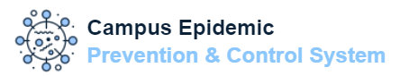

Campus Epidemic
Prevention & Control System
Campus Epidemic
Prevention & Control System
With the increasing number of covid cases, it is no longer possible to meet the overall epidemic prevention and control requirements of the school by relying on traditional human resources, which makes us think about how to use technology to strengthen the management measures of campus epidemic prevention and control. The web application is designed to prevent and control epidemics on campus and to manage students' leave of absence.
